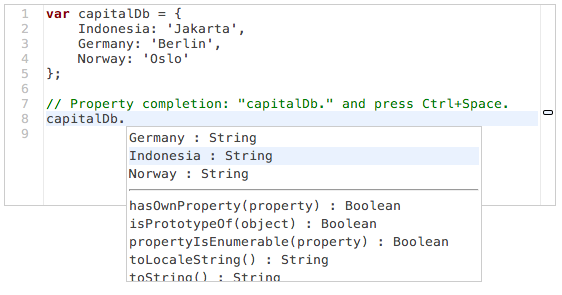

Once Esprima produces the abstract syntax tree (AST), various types of static analysis can give a useful insight. The code can be seen from a different perspective via a syntax visualization. For testing purposes, it can be checked against the language specification using the code validator.
Other analysis tools:
Analyzing the run-time behavior is essential to ensure a consistent application performance. One practical usage is by monitoring the function execution, it will reveal how many times each function is being invoked.
Regenerative transformation is made possibly by recreating the code from its AST. This permits both source rewriting (following particular coding style) as well as code minification (for size reduction).
Semantic information about the code (as being edited) can be used to give an important assistance, from a simple identifier highlighting to a more complex intelligent autocompletion.

Esprima is created and mantained by Ariya Hidayat.